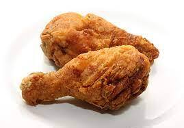
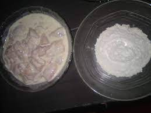
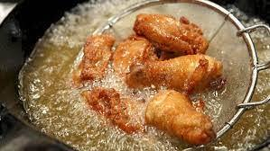

Resep Ayam Goreng

Bahan :
- Tepung ayam KFC
- Air secukupnya
- Minyak untuk menggoreng
Langkah2
- siapkan adonan tepung basah dengan tepung kering daribumbu kfc

- masukkan ayam ke adonan tepung basah kemudian campurkan lagi ke tepung kering
- masukkan ayam ke minyak yang sudah panas kemudia tiriskan ayam jika sudahh berwarna ke emasan

- hidangkan!!